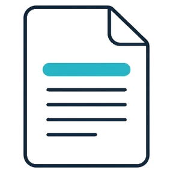
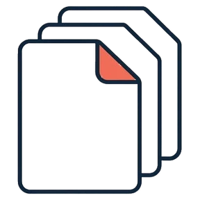

Please copy and paste your text into the box or upload a file for scanning.
Our trained specialists will scrutinize your piece of writing thoroughly to detect any possible mistakes. When analyzing papers, close attention is paid to the following aspects.

Paste your text into our web-based software to get instant analysis and recommended improvements.

Check your documents in all available formats — doc, docx, txt, RTF, PDF, xls, xlsx, html, epub, xml, odt.
Insert the link into the software to check readability score of the entire website page.
If your text is stored in Dropbox or OneDrive, it is convenient to upload it into the readability checker directly.
You are welcome to try our Advanced Readability Checker, which embodies an improved version of the Flesch Grade Level Calculator. Your texts will be methodically assessed using a particular Flesch Grade Level formula.
You will not see merely the percentage of readability — the checker specifies useful recommendations on the ultimate score. You will see the exact sentences that are vague or complicated, along with wordy phrases, redundant terminology, tautologies, superfluous intermediate clauses, and the misuse of Passive Voice.
Not merely a percentage. Every flagged passage is marked in place, with the reason beside it.
The committee reviewed the proposal in March. Notwithstanding the considerable reservations articulated by several participants during the preliminary discussion, the resolution was ultimately adopted without substantive amendment. It was decided by the board that the timeline would remain unchanged. The implementation methodology follows last year's plan.
If you barely cope with your academic load, our Readability Checker can turn into your life-saver. You will instantly see the drawbacks in your essays and learn to eliminate those flaws.
You will lose potential customers if the content on your pages looks vague. Although it may seem people rarely read your texts, they actually notice all the unusual sentences.
Will a modern busy audience ever read lengthy and intricate texts? Of course not. Using our Readability Checker will make your marketing illuminating even to the most demanding clients.
You may generate unique content — but can you make it concise? If you do not check readability, there is a risk your articles will be declined by stringent editors.
A readability score is a computer-calculated index. It denotes an educational level required to comprehend a specific content without difficulty. As the final score depends on the text’s academic or professional level, each readability detection is unique.
It does not mean your text should be full of short sentences. But if a sentence need not be extensive, it is better to divide it into two of average length. Succinct sentences are more appealing — they help your audience not to spend all their attention interpreting long-winded writing.
Even a dissertation should not be difficult for your readers’ perception. It is generally harder to comprehend words of more than four syllables. If a complex term can be swapped for a simpler word, go for it — though some scientific terms have no appropriate synonyms.
The score above is free. These go further — and stack on the same text.
Check whether your text is easy or difficult to understand for your target audience.
Get suggestions regarding the readability score of your text.
You can additionally check your text for plagiarism and get a detailed report.
Get expert assistance to improve grammar, stylistic, and punctuation errors in your text. Per page.
Check your text for readability right away. The result will surprise you.
Start checking